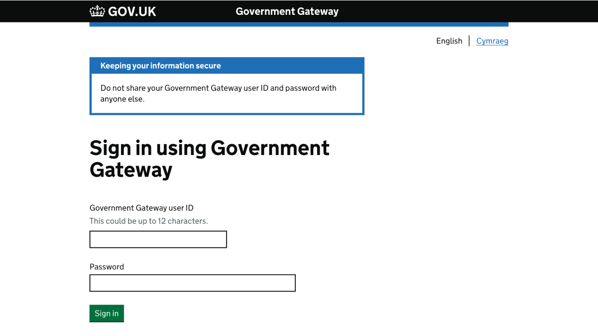
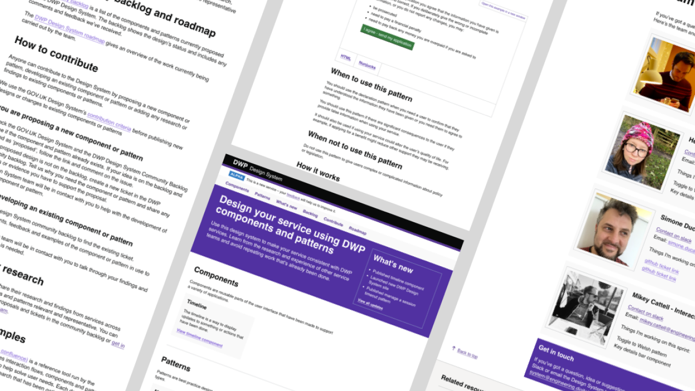
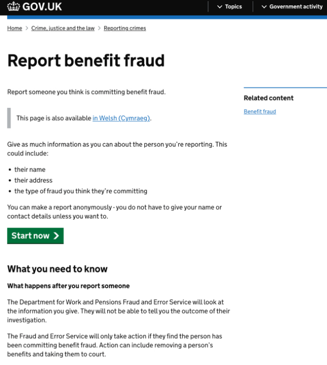
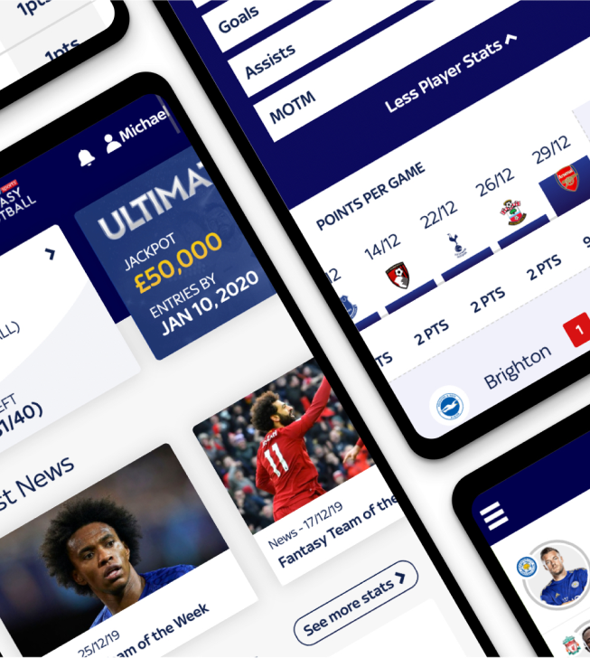
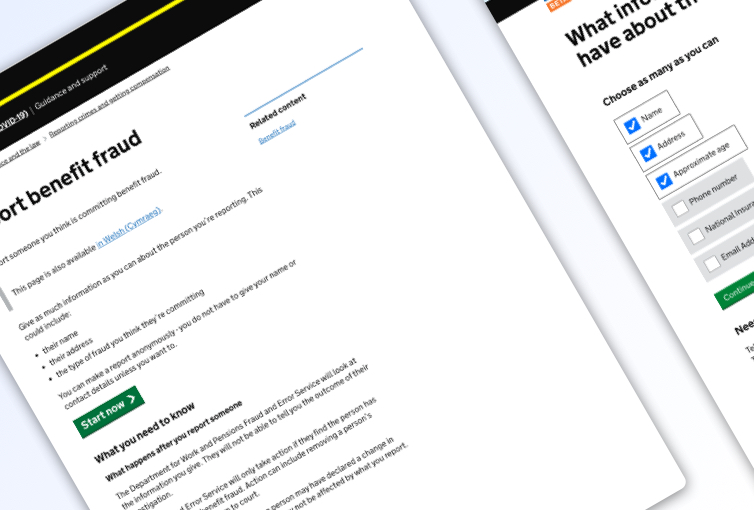
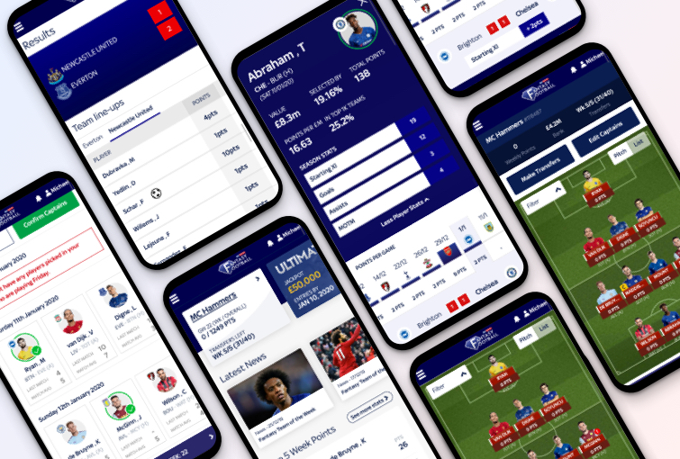
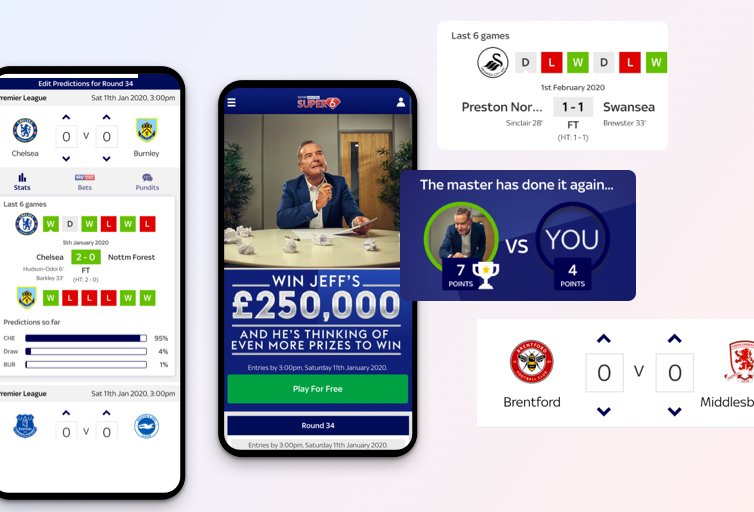
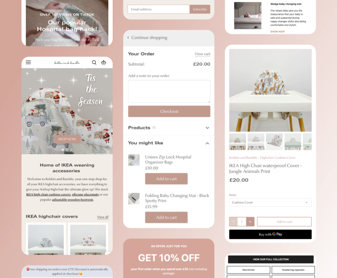

---
layout: index-page
title: Work - Lead Interaction and ex-front-end developer based in Yorkshire.
excerpt: Mikey Cattell is a multi-disciplinary product and interaction designer based in Leeds. 
date: '2018-12-31 19:00:00'
--- 
<article role="article">
<section>
    <div class="wrapper">
        <div class="marginbottom--xxxl"></div>
        <div class="grid-four-fifths">
            <h1 class="ralph">Case studies</h1>
        </div>
        <div class="grid-six-tenths">
            <p>Here is a small selection of recent work, for both private and public sectors and web agencies. I have a huge amount of work thats not allowed in the public domain, full portfolio available on request.</p>
        </div>
        <div class="marginbottom--xxxl"></div>
    </div>  
</section>


<section>
    <div class="wrapper">    

        <div class="marginbottom--xxxl hidefor640"></div>

        <div class="grid-full"> 
            <a href="hmrc-security-console.html" title="click here to read the case study for HMRC Gov gateway" style="border: 0;"></a>
          <h3><a href="hmrc-security-console.html" title="click here to read the case study for HMRC Gov gateway">Designing a safer Government Gateway</a></h3>
          <p>Teaming up with Capgemini, to ensure the use of the Government Gateway is a safer place to be.</p>
        </div>
  
        <div class="grid-full">
          <a href="designsystem-2022.html" title="click here to read the case study for DWP design system" style="border: 0;"></a>
          <h3><a href="designsystem-2022.html" title="click here to read the case study for DWP design system">Discovery within DWP’s first design system</a></h3>
          <p>Working on the design system team, spending much of that time ensuring it was a community led service whilst being valuable. Here’s how it happened.</p>
        </div>
  
        <div class="grid-half">
            <a href="benefitfraud.html"  style="border: 0;" title="click here to read about how I worked with the government to assist in lowering fraud"> </a>
          <h3><a href="benefitfraud.html" title="click here to read about how I worked with the government to assist in lowering fraud">Helping the Government lowering fraud online</a></h3>
          <p>Working with the Government, building a service to allow users to report someone committing benefit fraud.</p>
        </div>
    
        <div class="grid-half">
            <a href="fantasyfootball-2020.html"   style="border: 0;" title="click here to read about my work on sky sports fantasy football"></a>
          <h3><a href="fantasyfootball-2020.html" title="click here to read about my work on sky sports fantasy football">Rebranding Sky Sports Fantasy Football app</a></h3>
          <p>I helped to create a leading digital mobile experience that was aimed at current and new users to Fantasy Football.</p>
        </div>    
        <div class="marginbottom--xxl hidefor640"></div>
        <div class="grid-two-thirds">
          <p>I have worked in various industries on several high-profile projects, including NHS, Department of Work and Pensions (DWP), HMRC, Sky Bet, British Airways, Royal Mail, DEFRA, Sky Sports, Man City, and Jet2.</p>
      </div>


        <div class="grid-three-fourths">

            <!--<h2 class="workingheader"><a href="designsystem-2022.html" title="click here to read the case study for DWP design system">Discovery within DWP’s first design system</a></h2>
            <p class="dark-font">I worked on the Department of Work and Pension's design system team for nearly a year, spending much of that time ensuring it was a community led service whilst being valuable. Here’s how it happened.</p>
<div class="marginbottom--xxxl"></div>
            <h2 class="workingheader"><a href="benefitfraud.html" title="click here to read about how I worked with the government to assist in lowering fraud">Helping the Government lowering fraud online</a></h2>
            <p class="dark-font">Supporting the Government's approach to moving all services online, allowing users to report someone who they believe is committing benefit fraud</p>      
            <a class="noborder" href="benefitfraud.html" title="click here to read about how I worked with the government to assist in lowering fraud">
                
            </a>   

<div class="marginbottom--xxxl"></div>
            <h2 class="workingheader"><a href="fantasyfootball-2020.html" title="click here to read about my work on sky sports fantasy football">Rebranding Sky Sports' Fantasy Football app</a></h2>
            <p class="dark-font">I helped to create a leading digital mobile experience that was aimed at current and new users to Fantasy Football.</p>            
            <a class="noborder" href="fantasyfootball-2020.html" title="click here to read about my work on sky sports fantasy football">
                
            </a>            

         
        -->
<div class="marginbottom--xxxl"></div>
            <h2 class="workingheader"><a href="super6-2020.html" title="click here to read about how we redesigned Sky Sports' Super 6">Aligning Sky Sports' branding to Super 6</a></h2>
            <p class="dark-font">Leading the team in aligning and inspiring the team to improve and increase retention on one of the country's most popular apps</p>      
            <a class="noborder" href="super6-2020.html" title="click here to read about how we redesigned Sky Sports' Super 6">
                
            </a>       
<div class="marginbottom--xxxl"></div>
            <h2 class="workingheader"><a href="bobbinandbumble-2022.html" title="click here to read about how we redesigned Sky Sports' Super 6">Creating an online brand and website for Bobbin and Bumble</a></h2>
            <p class="dark-font">Leading the team in aligning and inspiring the team to improve and increase retention on one of the country's most popular apps</p>      
            <a class="noborder" href="super6-2020.html" title="click here to read about how we redesigned Sky Sports' Super 6">
                
            </a> 


<div class="marginbottom--xxxl"></div>
            <h2 class="workingheader"><a href="remingtonmancave-2020.html" title="read more about my work with Remington">Designing and building Remington's all in on shaver online branding</a></h2>

            <p class="dark-font">Worked with Remington to promote their new all-in-one-shaver</p>      

<div class="marginbottom--xxxl"></div>
            <h2 class="workingheader"><a href="remingtonyourstyle-2020.html" title="click here to read about how I helped design and build Remington's new product launch">Designing and building Remington's new hair products</a></h2>

            <p class="dark-font">Leading the design to assist Remington in promoting their new product</p>      

<div class="marginbottom--xxxl"></div>
            <h2 class="workingheader"><a href="russellhobbs-2020.html" title="click here to read about how I helped re-vamp and build Russell Hobbs new design and brand">Updating the Russell Hobbs online branding</a></h2>

            <p class="dark-font">Helping support Russell Hobbs' new branding, with a new design of their website</p>   

<div class="marginbottom--xxxl"></div>
            <h2 class="workingheader"><a href="mad-2020.html" title="read more about my time working with Mark and Andrew on their website">Showcasing the best places to eat for MAD</a></h2>

            <p class="dark-font">Working with an agency to help promote a range of restaurants owned by Mark & Andrew Developments</p>   


<div  style="border-bottom: 1px solid #d6d6d6">
            <h2 class="workingheader"><a href="techoff-2020.html" title="Surely you want to read more about my workings with the craziest website ever - TechOff Conference">The love-child of TED talks and WWE...</a></h2>

            <p class="dark-font">The craziest conference you ever wanted to go to -  The TechOff Conference</p>                                     
            <div class="marginbottom--xxxl"></div>

</div>
        </div>


        <div class="grid-two-thirds">
            <h3 class="mikey">Other work</h3>

            <ul class="worklists">
                <li>Designing with the British low-cost leisure airline - <a href="https://www.jet2.com/" title="click here to see Jet2's website ">Jet2 (direct link)</a></li>
                <li>Working closely with the popular interior designer - <a href="peter-worth-2020.html" title="click here to see how I helped Peter Worth design his new website">Peter Worth</a></li>
                <li>Everyone's favourite shop with the little pens - <a href="https://www.argos.co.uk" title="direct link to argos.co.uk website">Argos (direct link)</a></li>
                <li>Pick 7 winners and win - <a href="https://itv7.itv.com" title="click here to visit ITV7's website">ITV7 (direct link)</a></li>
            </ul>
        </div>
       
        <div class="marginbottom--xxxl"></div>

        <div class="grid-full">
            <p class="fontsize20">I often share work on <a href="http://mikeycattell.dribbble.com/" title="see more of my designs on dribbble">Dribbble</a>.</p>
        </div>

    </div>
    
</section>

<div class="clearfix"></div>

<div class="gradient-bottomtop">  
<div class="marginbottom--xxxl"></div>
      {% include whoworkedwith.html %}
</div>
<div class="marginbottom--xl"></div>

</article>